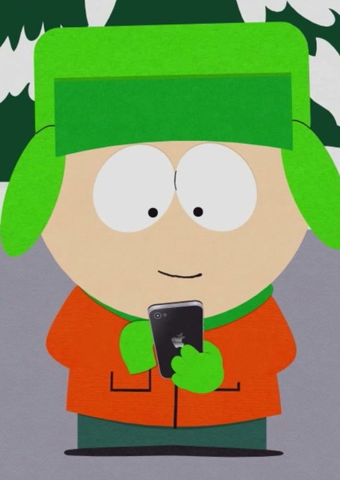

|  |
South Park ficou surpresa quando Kyle Broflovski, conhecido por sua constante rivalidade com Eric Cartman, lançou um canal de ASMR com um toque surpreendente. Aqui está a história intrigante por trás disso: ASMR Terapêutico: Um Canal Diferente de Tudo que Você Já Viu Kyle, aparentemente cansado das travessuras de Cartman, decidiu abraçar a tendência do ASMR para aliviar sua frustração. No entanto, em vez de tons suaves e calmantes, Kyle adotou uma abordagem única: ele xinga Cartman com uma combinação de sussurros e palavras de baixo calão. Isso rapidamente chamou a atenção da comunidade local. O Efeito Surpreendente em Seus Seguidores Surpreendentemente, o canal de ASMR de Kyle se tornou viral rapidamente. Muitos internautas se identificaram com a necessidade de expressar suas frustrações e raiva de uma forma criativa e controlada. O canal não apenas acumulou milhares de seguidores, mas também gerou debates sobre como lidar com antagonistas irritantes da vida real. A Reação de Cartman: Irritado ou Secretamente Lisonjeado? A notícia do canal de ASMR de Kyle chegou aos ouvidos de Cartman, causando uma reação mista. Enquanto ele fingia estar extremamente irritado e ofendido, alguns observadores notaram um lampejo de lisonja em seus olhos. Afinal, não é todo dia que alguém dedica um canal inteiro a insultá-lo de maneira tão meticulosamente elaborada. A Jornada de Autocontrole de Kyle Enquanto o canal de ASMR de Kyle se tornou uma fonte de entretenimento para muitos, ele próprio percebeu que estava aprendendo a controlar sua raiva e a canalizá-la de maneira criativa. Em vez de confrontos diretos e explosivos com Cartman, ele encontrou uma forma não convencional de desabafar enquanto mantinha uma certa dose de humor. Uma Lição de South Park: Encontrar Saídas Inesperadas A história de Kyle e seu canal de ASMR é um lembrete de que, mesmo em um lugar tão excêntrico como South Park, as pessoas podem encontrar saídas inesperadas para seus desafios e frustrações. Às vezes, até mesmo a rivalidade mais intensa pode dar origem a algo criativo e inovador. |